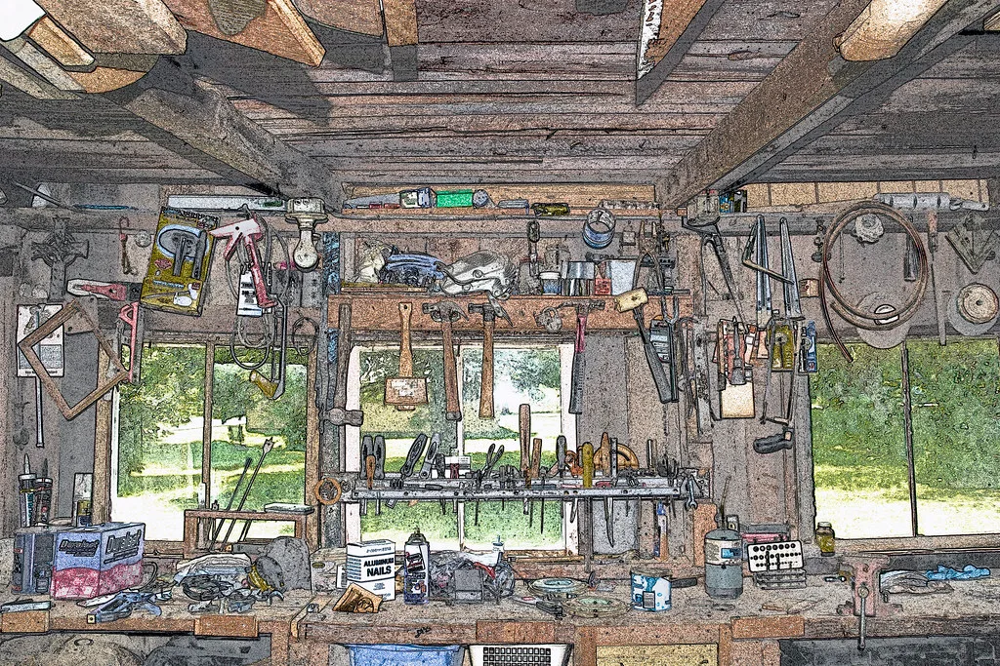
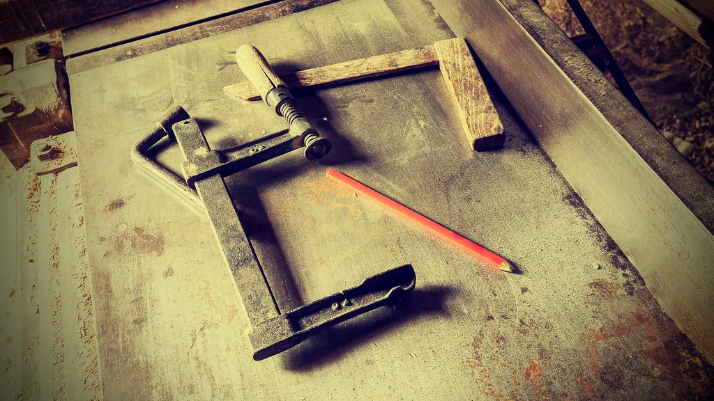
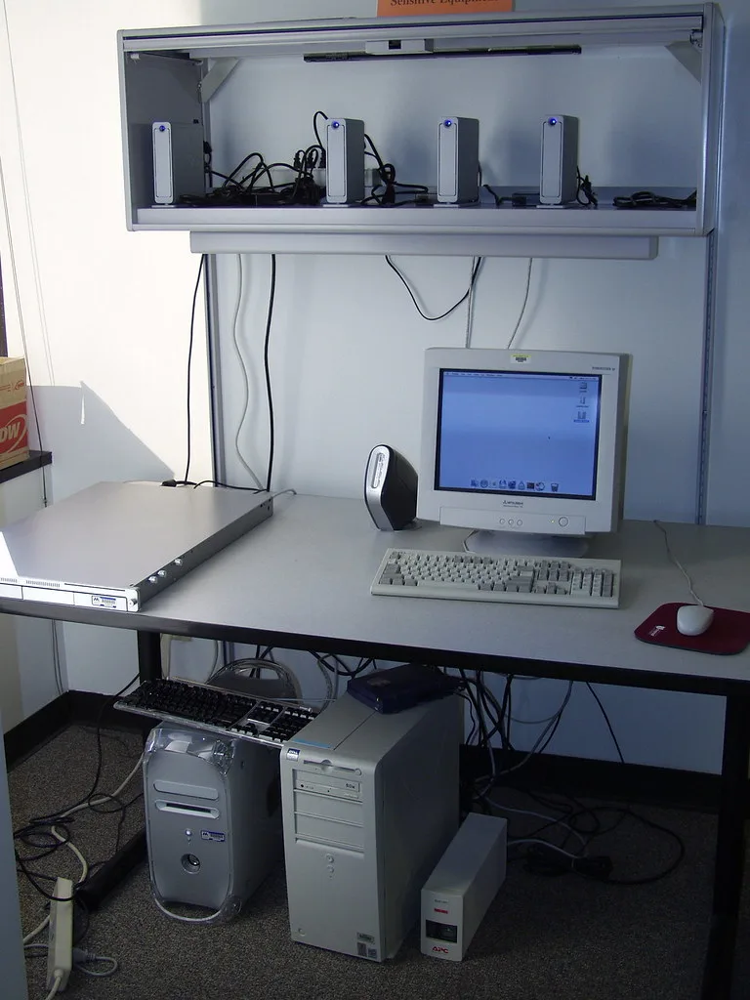

Atelier Mono
Home
Work
About
Contact
서리 의자 — 만드는 순서
2022년 가을부터 2023년 봄까지, 시제품 아홉 번 만에 나온 형태입니다.
재료
물푸레나무 · 라탄 · 무광 오일
01 · 증기 굽힘
등받이 한 장을 90분 쪄서 틀에 걸어 사흘 말립니다
02 · 짜맞춤
못 없이 장부로 다리와 좌판틀을 겁니다
03 · 라탄 엮기
좌판은 손으로 엮습니다. 한 장에 다섯 시간
04 · 마감
무광 오일을 세 번 먹이고 2주 건조합니다

도면에서 실물까지
스케치 → 1:1 목업 → 양산
작업실의 겨울
‹
›

납품하는 날
포장까지 직접 합니다
‹
›

세 번째 슬라이드
‹
›
같은 걸 하나 만들까요
치수와 쓰임만 알려 주시면 도면부터 같이 그립니다.
제작 문의